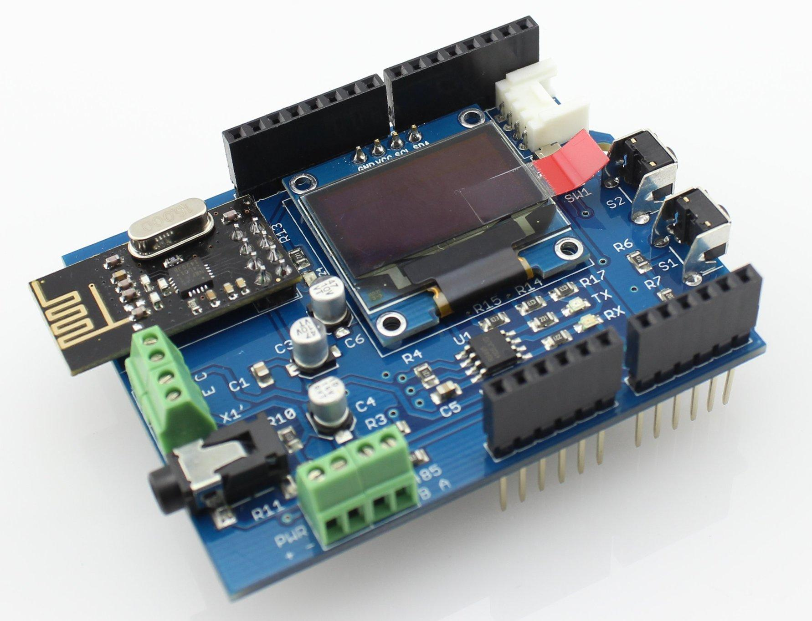
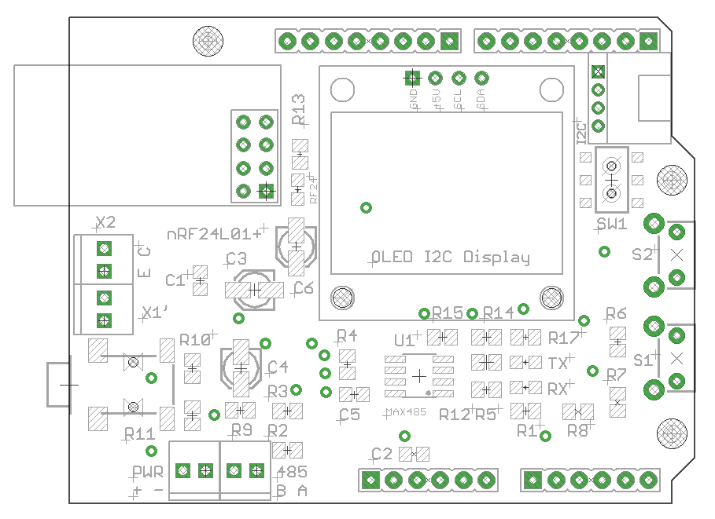
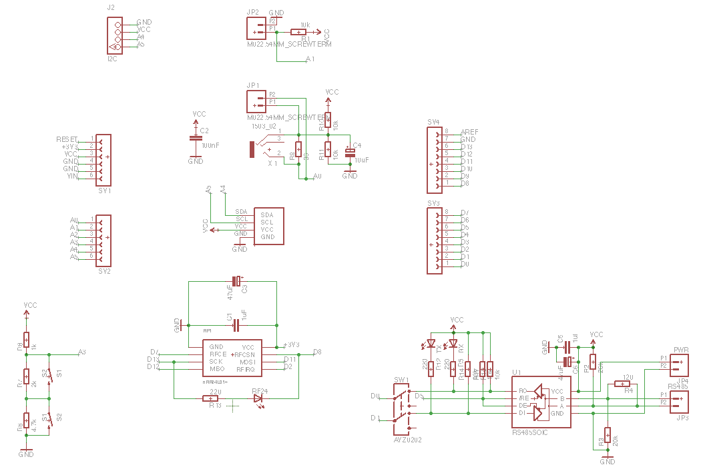

Energy Monitor Shield v2 is an Arduino-compatible expansion card designed for building energy monitoring system with support I2C OLED display, with the phototransistor to read data from the built-in LED for different energy meters, interface RS485 and built-in wireless transceiver nRF24L01 +.
Model: 106990026


The left side of EM Shield is a connector for current sensors (terminals X1 and X1 '- duplicate each other).
X2 - connector for the phototransistor.
In the upper right corner - I2C-connector.
Just below the right are two buttons (labeled S1 and S2).
Left-bottom-placed terminals for interface RS485 (referred to as PWR and AB).
Below I2C connector is a switch that connects / disconnects Arduino-pins RX / TX on chip MAX485 (switching "programming" and "work with the interface RS485").

In the basic version (without the use of Ethernet Shield) is possible to organize a non-invasive monitoring of energy consumption using current sensor.
When connecting the phototransistor can be arranged to read data from the meter (LED flashes on the counter).
With the RS485 interface can be carried out to obtain data from the meters (and other devices) equipped with this interface.
Information about the current level of consumption can be displayed on an optional OLED-screen.
Control of the device can be arranged with the help of two buttons on Shield.
The data obtained can be transmitted via nRF24L01 +
Additionally EM Shield v2 can be connected to any device using i2c Grove-compatible connections (sensors, displays, etc.).
EM Shield v2 was designed to be fully compatible with Ethernet Shield (Wiznet 5100 + SD) - so you can use these two together Schild to create even more advanced device monitoring electricity (logging on SD-card and presenting the data on a web page).
To use the EM Shield requires the following libraries:
API
Additionally required libraries that are used when working RF24:
Library has used examples that allow easy to understand how they work.
Initialization RF-module as follows:
... //RF24 radio(CE,CSN); RF24 radio(7,8); ...
/* This sketch is for a Energy Monitor v 2.0 http://www.seeedstudio.com/depot/Energy-Monitor-Shield-V2-p-2393.html and MySensors 1.5 http://www.mysensors.org/ modified 1 April 2016 by greengo */ #include <SPI.h> #include "U8glib.h" #include <MySensor.h> #include "EmonLib.h" #define WINDOW 15 // Define a static node address, remove if you want auto address assignment #define NODE_ADDRESS 40 #define NODE_REPEAT true //#define RF24_PA_LEVEL RF24_PA_MAX // How many milli seconds between each measurement #define MEASURE_INTERVAL 1000 // 1 sec // FORCE_TRANSMIT_INTERVAL, this number of times of wakeup, the sensor is forced to report all values to the controller #define FORCE_TRANSMIT_INTERVAL 300 //every 5 min unsigned long SLEEP_TIME = 1000; // Sleep time between reads (in milliseconds) int TEMP_TRANSMIT_THRESHOLD = 0; //~35 Watt #define CHILD_ID_POWER 0 #define CHILD_ID_FLOATING_CUR_SENSOR 1 //floating sensor // HW SPI Com: CS = 10, A0 = 9 (Hardware Pins are SCK = 13 and MOSI = 11) U8GLIB_SSD1306_128X64 u8g(U8G_I2C_OPT_NONE); EnergyMonitor emon; MyTransportNRF24 transport(7, 8, RF24_PA_LEVEL); //for EMv2 MySensor gw(transport); unsigned long CHECK_TIME = millis(); MyMessage IrmsMsg(CHILD_ID_POWER, V_WATT); MyMessage kWhMsg(CHILD_ID_POWER, V_KWH); MyMessage FloatingMsg(CHILD_ID_FLOATING_CUR_SENSOR, V_VAR1); // Global settings int measureCount = 0; boolean transmission_occured = false; // Storage of old measurements float realWatt = 0; float realkWt = 0; double Irms; float lastIrms = 0; int Floating; float PMin = 99; float PMax = 0; int stateFloating = 0; void setup() { double cIrms = 0; // emon.current(0, 111.1); // Current: input pin, calibration. emon.current(0, 71.2); double Irms[WINDOW]; Irms[0] = emon.calcIrms(1480); // the first value in the measurement clearly "crooked" for (int i=0; i<WINDOW; i++) { Irms[i] = emon.calcIrms(1480); cIrms = cIrms + Irms[i]; delay(100); } #ifdef NODE_ADDRESS gw.begin(incomingMessage, NODE_ADDRESS, NODE_REPEAT); #else gw.begin(incomingMessage, AUTO, NODE_REPEAT); #endif gw.sendSketchInfo("Energy Monitor v2.0", "1.5.0"); // Register all sensors to gw (they will be created as child devices) gw.present(CHILD_ID_POWER, S_POWER); gw.present(CHILD_ID_FLOATING_CUR_SENSOR, S_CUSTOM); sendPowerMeasurements(false); } void loop() { gw.process(); displayUpdate(); unsigned long NOW_TIME = millis(); if(NOW_TIME - CHECK_TIME >= SLEEP_TIME) { measureCount ++; bool forceTransmit = false; transmission_occured = false; if (measureCount > FORCE_TRANSMIT_INTERVAL) { // force a transmission forceTransmit = true; measureCount = 0; } sendPowerMeasurements(forceTransmit); // Serial.print(" measureCount: "); // Serial.println(measureCount); // Serial.print(" "); CHECK_TIME = NOW_TIME; } } void sendPowerMeasurements(bool force) { bool tx = force; Irms = emon.calcIrms(1480); // Calculate Irms only realWatt = (emon.Irms * 220); // Extract Real Power into variable realkWt = (Irms * 0.220); // fixing minimum and maximum values if (realkWt>PMax) PMax = realkWt; if (realkWt<PMin && realkWt>0.05) PMin = realkWt; // Set relay to last known state (using eeprom storage) TEMP_TRANSMIT_THRESHOLD = gw.loadState(CHILD_ID_FLOATING_CUR_SENSOR); Floating = TEMP_TRANSMIT_THRESHOLD; // Serial.print("TEMP_TRANSMIT_THRESHOLD: ");Serial.println(TEMP_TRANSMIT_THRESHOLD); float diffIrms = abs(lastIrms - Irms); // Serial.print(F("IrmsDiff :"));Serial.println(diffIrms); if (diffIrms > TEMP_TRANSMIT_THRESHOLD) tx = true; if (tx) { measureCount = 0; // Serial.print("Watt: ");Serial.println(realWatt); // Serial.print("kWt : ");Serial.println(realkWt); gw.send(IrmsMsg.set(realWatt, 1)); gw.send(kWhMsg.set(realkWt, 2)); lastIrms = Irms; transmission_occured = true; } // Serial.print("Irms : ");Serial.println(Irms); } // OLED SSD1306 128X64 (yello line top) void displayUpdate() { u8g.firstPage(); do { draw(); } while( u8g.nextPage() ); } void draw(void) { // graphic commands to redraw the complete screen should be placed here u8g.setFont(u8g_font_6x12r); // u8g.print("Energy Monitor"); u8g.setPrintPos(0, 30); // Scale up all draw procedures u8g.print(realkWt); } //********************************************* void incomingMessage(const MyMessage &message) { // We only expect one type of message from controller. But we better check anyway. if (message.isAck()) { // Serial.println("This is an ack from gateway"); } if (message.type == V_VAR1) { // Change state stateFloating = message.getInt(); // Store state in eeprom gw.saveState(CHILD_ID_FLOATING_CUR_SENSOR, stateFloating); // Write some debug info // Serial.print("Incoming change for sensor:"); // Serial.print(message.sensor); // Serial.print(", Delta =: "); // Serial.println(message.getInt()); // Serial.print(", New status: "); // Serial.println(message.getBool()); } }
| Revision | Description | Release |
| 1.0 | Prototype V1 | 01.04.2014 |
| 2.0 | Public version | 29.12.2014 |
This product can be purchased via distributors: